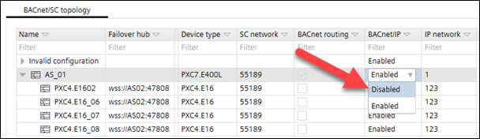
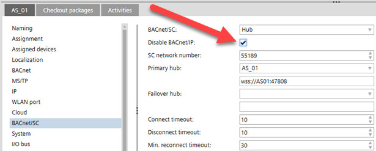

禁用 BACnet/IP 通信
对于已启用 BACnet/SC 的设备，您可以停用 BACnet/IP 通信（如果确实不再需要 BACnet/IP 通信）。停用 BACnet/IP 时，设备将仅与 BACnet/SC 通信。其他通信通道（例如通过以太网的 BACnet/IP 和通过 IP 多播的 DICP）将被停用。
有两个例外。
- Port 443 for HTTPS communication will remain open.
- The port for cloud communication will remain open.
您可以关闭并停用一台设备或连接到路由器的所有设备的 BACnet/IP 通信（作为批量操作）。
Disable BACnet/IP communication for one device (in the BACnet/SC topology)

- Go to Building.
- Open the BACnet/SC task.
- In the BACnet/SC topology table, select a device.
- In the column BACnet/IP, select Disabled.
- The BACnet/IP communication is disabled and the IP functions in the Device details are grayed out.
Disable BACnet/IP communication for one device (in the Device details)

- Go to Building.
- Open the BACnet/SC task.
- In the BACnet/SC topology table select a device.
- In Device details > BACnet/SC, select Disable BACnet/IP.
- The BACnet/IP communication is disabled and the IP functions in the Device details are grayed out.
Details pane of the device version ≤ 1.5
Disable BACnet/IP communication for all devices connected to a hub
- Go to Building.
- Open the BACnet/SC task.
- In the BACnet/SC topology table, select a device which is used for BACnet routing.
- Right-click and select Close all BACnet/IP communication.
- The BACnet/IP communication is disabled for all devices connected to the hub.